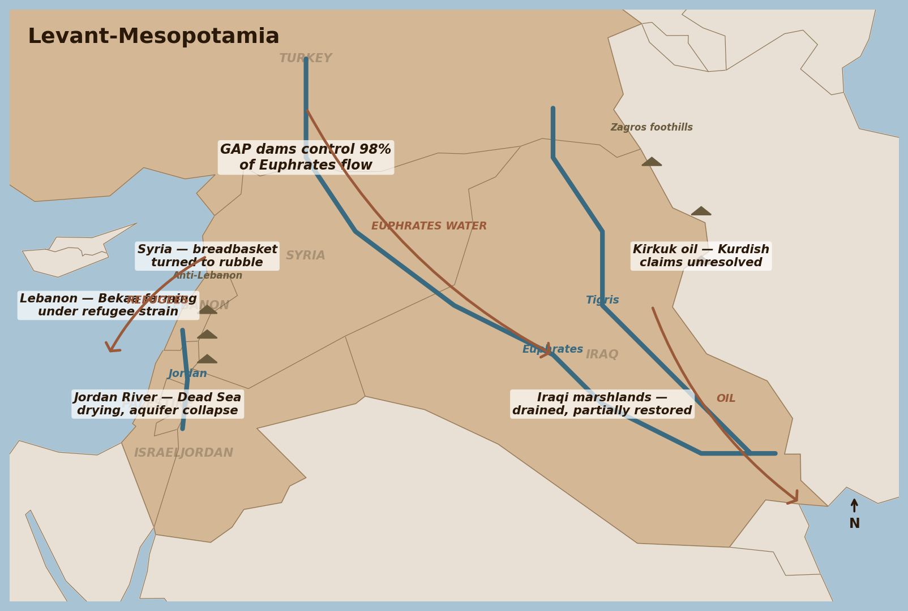

Levant-Mesopotamia176M people
where ten thousand years of alluvium built fields that winter rain must now reach through twenty-two dams
In the Bekaa Valley, a Lebanese farmer opens the sluice gate on an irrigation channel older than the Roman temple at Baalbek, guiding snowmelt from Mount Lebanon toward wheat that feeds his family and the Syrian family who harvest it.
Lives Lived Here
Before dawn in the Jordan Valley, a Syrian refugee picks tomatoes on a Jordanian farm for less than the Jordanian minimum wage. He has done this for eleven years, since he crossed the border from Daraa with his wife and three children. His employer pays him in cash, no contract, no insurance, no recourse. The tomatoes travel to Amman's wholesale market, where a Jordanian trader sells them alongside Iraqi dates trucked from Basra and Lebanese olive oil that arrived overland through Syria — a route that closes and reopens depending on which checkpoint is manned by which faction this month. His wife works in a garment factory in Irbid's industrial zone, sewing for export to European brands under a trade concession that Jordan received in exchange for hosting refugees. The concession requires that refugees make up a percentage of the workforce. She is, in this sense, both the reason for the trade deal and its cheapest input.
In Beirut, a Lebanese civil servant has not been paid a living wage since the banking collapse of 2019. The banks froze deposits — ordinary people's savings, not the accounts of the political-banking elite who moved their money out in advance. She buys bread with what the lira is worth today, which is roughly 2% of what it was worth when she deposited her salary five years ago. Her building's concierge is Palestinian, born in Shatila camp, whose family has been in Lebanon since 1948 — seventy-eight years, three generations, still legally barred from owning property or working in seventy professions. The bread she buys is made from wheat that once came from Syria. Syria used to be self-sufficient in wheat. It is not anymore.
In southern Iraq, a fisherman poles his mashuf through the remnants of the Mesopotamian marshlands — the reed-and-water world the Ma'dan people built over five thousand years, drained by Saddam as collective punishment against the Marsh Arabs, partially restored after 2003, and now shrinking again as Turkey's Ilisu Dam holds back the Tigris upstream. The buffalo that the Ma'dan raise in the marshes produce a cheese sold in Basra's markets. The fisherman's catch is smaller each year. The reeds are thinner. The water tastes of salt.
In southern Iraq, a fisherman poles his mashuf through the remnants of the Mesopotamian marshlands — the reed-and-water world the Ma'dan people built over five thousand years, drained by Saddam as collective punishment against the Marsh Arabs, partially restored after 2003, and now shrinking again as Turkey's Ilisu Dam holds back the Tigris upstream. The buffalo that the Ma'dan raise in the marshes produce a cheese sold in Basra's markets. The fisherman's catch is smaller each year. The reeds are thinner. The water tastes of salt.

Reference map. Country boundaries and features are approximate.
What Presses
The weight on Levant-Mesopotamia
Gaza — In a strip of land 41 kilometres long and 10 kilometres wide, 2 million people depend on a coastal aquifer that is 97% contaminated. The infrastructure that treated what little clean water remained — desalination plants, sewage systems, wells — has been systematically destroyed. The UN Protection Cluster reports imminent forcible displacement of Palestinian families in Batn al-Hawa, Silwan, East Jerusalem. In the south, 1.6 million people are in IPC Phase 3 or above — crisis-level food insecurity in a place where the definition of crisis has been exceeded so many times it no longer captures what is happening. Aid workers and health workers have been killed at rates unprecedented in modern conflict: 285 aid workers, 120 health workers, 471 attacks on health facilities. The siege is not a policy instrument; it is the architecture of daily life.
Southern Iraq and the Marshlands — Iraq produces over four million barrels of oil per day, generating more than $80 billion in annual revenue. BP, ExxonMobil, LUKOIL, and TotalEnergies operate the southern fields around Basra, where communities live with gas flaring, water contamination, and temperatures that exceed 50 degrees Celsius in summer. The Mesopotamian marshlands downstream — the ecological foundation of the Ma'dan people's five-thousand-year civilisation — are shrinking again. Turkey's Ilisu Dam on the Tigris and Iran's diversion of tributaries from the east have reduced the water reaching the marshes to a fraction of what the ecosystem requires. Iraq recorded drought conditions in the past month, and 270 dust storm days per year — up from 25 in the 1980s — are turning the dried marshland bed into airborne particulate that settles in the lungs of Basra's children.
Northeast Syria (Jezira) — In Al-Hasakeh governorate, 146,511 people were displaced in late January, and a gradual return movement is now underway — families coming back to homes in areas where the Syrian Democratic Forces, Turkish-backed factions, and remnants of the Assad-era state all claim authority. The Khabur River, a Euphrates tributary that once watered the wheat fields of the Jazira, runs at a fraction of its historical volume. Syria was once self-sufficient in wheat; that agricultural system lies destroyed, and the World Bank has just approved $20 million in IDA financing to begin rebuilding state capacity from near zero. The SDF controls northeast Syria's oil revenue with US military backing — an autonomy that exists only as long as Washington decides it should.
Oil, water, gas, grain — four resource streams extracted from this region feed global energy markets, irrigate Turkish commercial agriculture, and power Israeli industry. What remains for the communities at the extraction sites is contaminated water in Basra, a drying riverbed in the Jazira, a permit system in the West Bank that rations water by nationality, and an aquifer in Gaza that poisons those who drink from it. The geography of this region means that every extraction is also a deprivation downstream. 1,431 killed (3 months); 2.8M food insecure (current); 7.6M displaced (total); wheat, crude oil, banking sector deposits leaving.
This Week
Syria: Since the peak of displacement in Al-Hasakeh Governorate on 29 January, where 146,511 displaced individuals were recorded, a gradual return movement has been observed.
Syria: The World Bank Board approved a $20 million IDA grant to Syria to strengthen efficiency, transparency and accountability in governance — the first such financing since the fall of the Assad regime.
Iraq: A sharp escalation in regional tensions occurred on 28 February following coordinated military strikes by the United States and Israel inside Iran, triggering retaliatory missile and drone activity across the region.
Gaza: The Protection Cluster calls on Member States to urgently intervene to prevent the imminent forcible displacement of Palestinian families in Batn al-Hawa, Silwan, East Jerusalem.
Iraq: The IFRC confirmed that the activation of the Imminent DREF for Iraq was fully justified given the uncertainty and risks identified, even though the anticipated worst-case scenario did not fully materialise.
The Euphrates is mentioned in the second chapter of Genesis, one of four rivers flowing from Eden. It is now a river whose flow is decided in Ankara, whose absence is felt in Basra, and whose name appears in water-stress spreadsheets at 124% of renewable supply. The distance between scripture and spreadsheet is not as far as it seems.
For Prayer
For the people of Gaza, 312 conflict fatalities and 1617 events recorded in 3-month period. armed groups operations concentrated in multiple regions. 1,600,655 people in ipc phase 3+ food insecurity — that those bearing this weight may find help.
For the people of Iraq, 48 conflict fatalities and 83 events recorded in 3-month period. armed groups operations concentrated in multiple regions. 1,031,475 persons internally displaced — that those bearing this weight may find help.
For the people of Israel, 3 conflict fatalities and 14 events recorded in 3-month period. armed groups operations concentrated in multiple regions — that those bearing this weight may find help.
For the 2.8 million people across Levant-Mesopotamia who cannot meet their daily food needs. That supply routes hold, that harvests come, that aid reaches those cut off.
For the 7.6 million people displaced from their homes — especially in Iraq, where the crisis is most acute. For safety on the road and welcome at the journey's end.
For communities enduring armed conflict between Hay'at Tahrir al-Sham and Syrian Democratic Forces across Levant-Mesopotamia — 1,000 killed in the past three months. This week in Iraq: A sharp escalation in regional tensions occurred on 28 February 2026 following coordinated military strikes by the United States of America and Israel inside Iran which triggered subsequent retaliatory missile and drone activity across the region.. For protection of civilians and for those who have lost loved ones.
For the land itself — water stress averaging 82% across the region. For pastoralists seeking grazing, for farmers awaiting rain, for the rivers and aquifers that sustain everything. For the land beneath their feet, from which wheat and crude oil is extracted to benefit those far away. This week in Syria: Heavy rainfall, strong winds and thunderstorms have been affecting northern Syria, notably the Aleppo, Raqqa and Hassakeh Governorates since 14 March, causing floods and flash floods that have resulted in casualties, damage and the closure of the....
Especially for Iraq, facing the most severe convergence of crises in this region. This week in Iraq: Event development Update regarding the event’s development Based on the considerable uncertainty and the risks identified during the assessment, the activation of the Imminent DREF was fully justified, even though the anticipated situation did not.... For those making impossible decisions about whether to stay or flee, and for those who cannot choose.
For humanitarian workers and missionaries in Levant-Mesopotamia — for their safety, their courage, and their capacity to reach those most in need.
For every act of resistance and care in Levant-Mesopotamia — communities sharing food, farmers saving seed, neighbours sheltering neighbours. That these small acts of defiance outlast the crisis.
Out of the depths have I cried to you, O Lord; Lord, hear my voice; let your ears consider well the voice of my supplication.
Most merciful God, who by the death and resurrection of your Son Jesus Christ delivered and saved the world: grant that by faith in him who suffered on the cross we may triumph in the power of his victory; through Jesus Christ your Son our Lord, who is alive and reigns with you, in the unity of the Holy Spirit, one God, now and for ever.
Amen.
Seeds of Hope
In the Mesopotamian marshlands, Ma'dan communities have returned to restore the reed beds and buffalo herds that Saddam's drainage was designed to destroy. They replant in water that is shallower each year, knowing that the restoration depends on river flow that Turkey and Iran control. The act of return is itself the resistance — a refusal to accept that a five-thousand-year civilisation can be ended by a dam.
For Reflection
Whose hunger makes your abundance possible?
What does it mean to pray 'give us this day our daily bread' alongside those who lack it?
Looking Ahead
- A sharp escalation in regional tensions occurred on 28 February following coordinated US and Israeli military strikes inside Iran, triggering retaliatory missile and drone activity across the region.
- Iraq activated an Imminent DREF through the Red Cross in anticipation of humanitarian consequences that, this time, did not fully materialise — but the activation was justified by the uncertainty.
- Summer temperatures exceed 50C in Basra and Baghdad from June -- peak water demand across the region tests whether the Euphrates delivers enough to irrigate Iraq's southern farms
- Syria's post-Assad institutional rebuilding -- World Bank's $20M IDA grant is the first step; watch for donor coordination and whether aid reaches northeast Syria under SDF control
- Gaza ceasefire negotiations and UNRWA funding decisions at the UN General Assembly in September -- these shape whether 2 million people get water infrastructure repair or continued siege
Carry This
What to bring with you from this briefing
Take Action
Organizations working at the nodes this briefing traces
Palestinian human rights organization documenting land confiscation, olive grove destruction, water access denial, and settlement expansion in the occupied West Bank. Provides legal analysis under international humanitarian law.
Documents the systematic uprooting of Palestinian olive groves the briefing describes — some trees over 1,000 years old — for settlement expansion, where OCHA reports the destruction of the agricultural heritage that sustained communities for millennia.
Iraqi environmental organization monitoring the Tigris-Euphrates marshlands, documenting water level decline from upstream damming, and supporting the Ma'dan (Marsh Arab) communities whose 5,000-year-old reed-and-water civilization is shrinking again.
Works directly in the Iraqi marshlands the briefing identifies — drained by Saddam, partially restored, and now shrinking again from Turkish and Iranian upstream diversion — supporting the Ma'dan communities whose civilization depends on water that others control.
Trinational Israeli-Palestinian-Jordanian organization working on shared water resources, Jordan River rehabilitation, and cross-border environmental cooperation as a pathway to peace.
Addresses the water control that the briefing identifies as the master variable — who controls rivers and aquifers across political boundaries determines every livelihood, every conflict line, and every displacement pattern in the Levant.
Coordinates water, sanitation, and hygiene response in Gaza and the West Bank, documenting the coastal aquifer crisis where 97% of water is unfit for drinking due to sewage contamination and seawater intrusion from over-extraction.
Responds to the Gaza water crisis the briefing identifies — 2M people dependent on a coastal aquifer contaminated by sewage and seawater intrusion, where 97% of water is unfit for drinking, making water itself a weapon of the siege.
Research and advocacy initiative at the Middle East Institute tracking transboundary water politics on the Tigris-Euphrates, documenting the downstream impacts of Turkey's GAP dam system on Iraqi and Syrian agriculture.
Monitors the upstream dam system the briefing identifies as controlling Euphrates flow — Turkey's GAP reductions during Syrian drought contributed to displacement preceding civil war, and Iraqi farmers downstream face permanent water loss as infrastructure upstream captures more.
Generated 2026-03-18